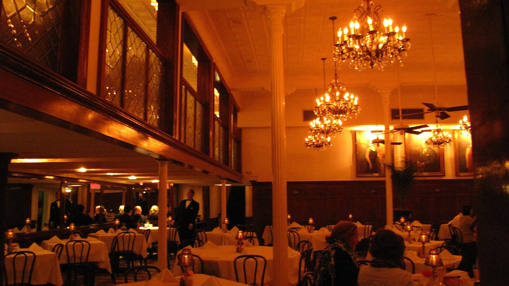
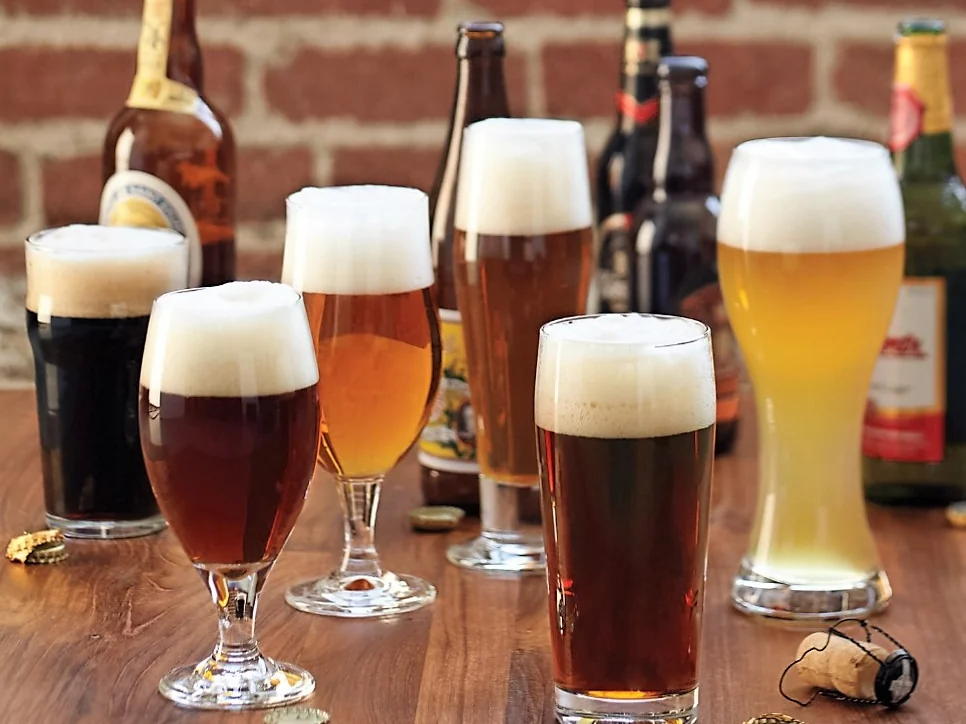
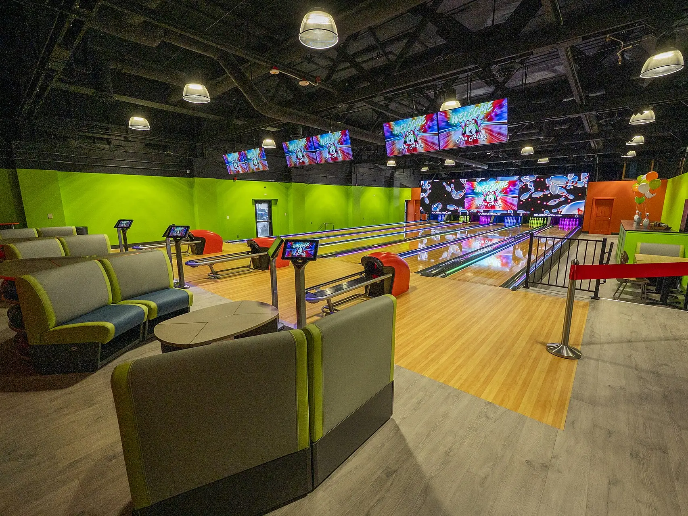
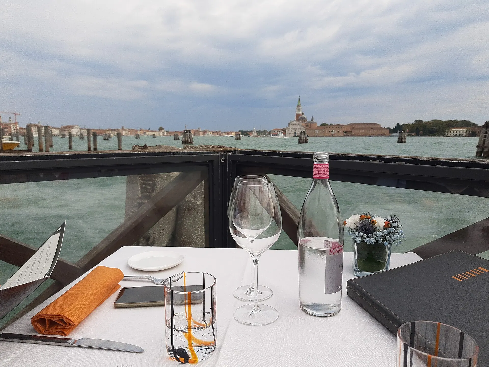

The bistro
The place
Café de la Gare is a café and restaurant serving traditional food, right opposite Munsbach station. People come to eat, for a drink on the terrace, or for a game of skittles.

Gallery
In pictures


Opening hours
Opening hours
- Monday
- 17h00 – 1h00
- Tuesday – Friday
- 11h00 – 1h00
- Saturday
- 17h00 – 1h00
- Sunday
- 10h00 – 1h00
Find us
Find us
- Call
- +352 27 40 20 40
- Address
- 197, rue Principale, L-5366 Munsbach, Schuttrange